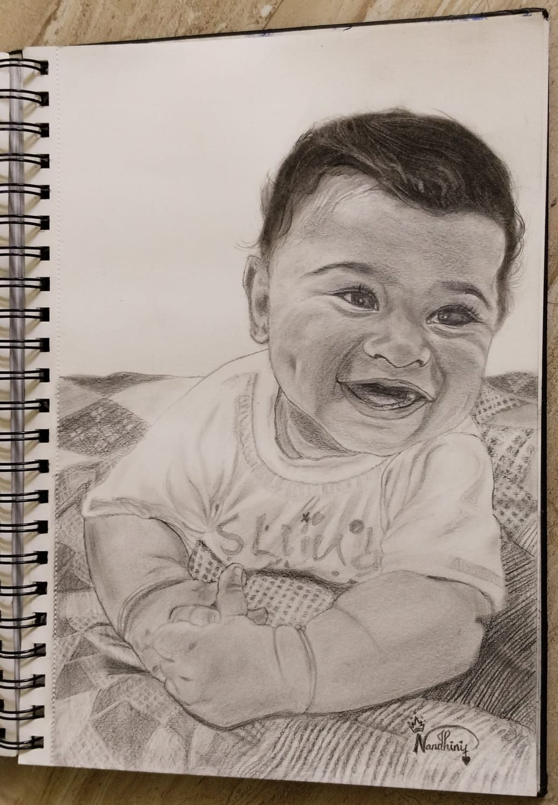

Graphite pencil is my favourite medium, as it allows for great delicacy and softness. To maintain a light touch, I always aim to keep the shading on faces as minimal as possible. When drawing shadows I avoid rubbing my shading into the paper, which can create a dull effect – instead I like to build up fine layers of hatching which can better convey the translucent quality of skin.
Below you’ll find prices for some standard sized portraits with a plain background (if you’d like a background let me know and I can give you a quote for this) Portraits are supplied unframed.
One subject, head and shoulders
30 x 25 cm (12 x 10 inches)
800/-
40 x 35 cm (16 x 14 inches)
1500/-
Two subjects, head and shoulders
30 x 45 cm (12 x 18 inches)
1500/-
35 x 50 cm (14 x 20 inches)
2300/-